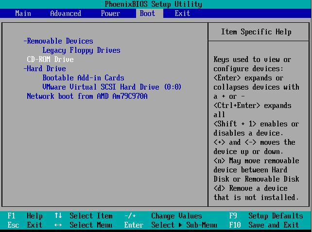

Bienvenido al DVD de instalación de
MAX: Madrid_Linux. Si quiere instalar MAX tiene en esta misma carpeta el Manual de instalación, configuración y uso básico de MAX.
También puede utilizar MAX: Madrid_Linux sin necesidad de instalarlo. Utilice este DVD o pendrive para arrancar su ordenador con nuestro sistema operativo siguiendo las instrucciones que se detallan a continuación:
En el modo DVD-Live, lo que se hace durante el arranque es crear un
disco virtual en la memoria RAM, disco que desaparece al apagar el
ordenador; por lo que deberá recordar que las configuraciones definidas
en una sesión de trabajo no se mantienen para la siguiente. Es decir,
si se ha configurado la tarjeta de red o la conexión a Internet, se
tendrá que volver a hacer cuando apague y vuelva a encender el
ordenador en modo live. Los datos de su trabajo, archivos de texto,
imágenes, etc, se pueden guardar en cualquier de las unidades de
almacenamiento del ordenador, un disco usb, por ejemplo, que sería
detectado automáticamente al conectarlo al ordenador, por la versión
live.
El escritorio que se carga desde el DVD Live es MATE, y con el
usuario madrid sin contraseña. Este sistema de trabajo tiene la ventaja
de que no nos toca nuestro disco duro, pero tiene la desventaja de no
mantener la configuraciones y que funciona más lento que las versiones
instaladas en el disco duro (dependiendo, claro está, de la cantidad de
memoria RAM disponible en el ordenador).
Nuestra recomendación es que trabaje en el modo Live hasta que se
sienta cómodo trabajando con el sistema y, más tarde, cuando se sienta
seguro, instale la distribución en el disco duro.
La instalación de MAX en nuestro disco duro se puede realizar tanto
desde la versión en DVD Live como desde la versión en CD Live, por ello
será necesario arrancar desde el DVD o desde el CD.
En este apartado se mostrará cómo cambiar la configuración del
ordenador, para que si hay un DVD o un CD arrancable metido en su
lector de CD/DVD, arranque directamente desde el lector de CD/DVD en
vez de hacerlo desde el disco duro del ordenador. Esto se denomina
cambiar la secuencia de arranque del ordenador. Debido al gran número
de modelos de placas base y BIOS disponibles en los diferentes modelos
y tipos de ordenadores, es imposible abarcarlos todos en un documento
de este tipo, y por ello se dará una guía de pasos genéricos. Para más
detalles sobre como configurar la secuencia de arranque en su BIOS
concreta, revise el manual de su ordenador.
El primer paso es arrancar su ordenador pulsando el botón de
encendido, o reiniciando el ordenador si éste está encendido. Después
se debe pulsar la tecla, o combinación de teclas, para entrar dentro de
la configuración de la BIOS (ejemplos de teclas son: Supr, Del, F2).
Normalmente en la pantalla suele indicar qué tecla o combinación de
teclas es la que hay que pulsar. En el caso del arranque del ordenador
que se muestra en la figura siguiente, la entrada en la BIOS se realiza
pulsando la tecla F2
aunque en este modelo de ordenador se aprecia que puede accederse a un
menú de arranque sin necesidad de entrar en la BIOS, pulsando la tecla
ESC, algo que empieza a ser habitual en los ordenadores modernos.

Si su ordenador no dispone de dicho menú de arranque, al entrar dentro
de la BIOS, deberá buscar el apartado donde se configura la secuencia
de arranque del ordenador. Cambie la secuencia (con las operaciones
necesarias mostradas en el manual de su placa base) para que el lector
de CD/DVD se coloque antes del disco duro, tal como se muestra en la
figura siguiente:

Una vez configurada la secuencia de arranque, tendrá que guardar la
nueva configuración seleccionando el apartado, o pulsación de teclas,
que permita salvar los datos de la configuración,
a continuación se le pedirá la confirmación de que desea salir y
guardar los datos, y para ello pulse la tecla Intro en la opción YES,
tal como se muestra en la figura siguiente.

El ordenador se reiniciará en ese momento, asegúrese de que el DVD de
MAX 11.0 esta metido en el lector de CD/DVD, si no es así el ordenador
arrancará desde el disco duro. Cuando pueda introduzca el DVD de MAX
11.0 y reinicie el ordenador. Aparecerá la siguiente pantall
Si dejamos que arranque solo, se mostrará la pantalla principal de MAX y podrá comenzar a utilizarlo.